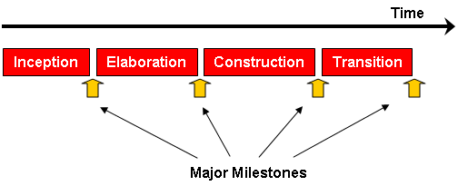
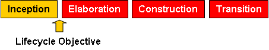
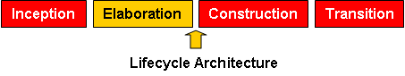
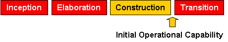
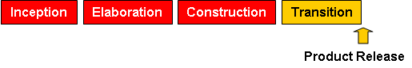

The Rational Unified Process divides one development cycle in four consecutive phases
Each phase is concluded with a well-defined milestone—a point in time at which certain critical decisions must be made, and therefore key goals must have been achieved.

The phases and major milestones in the process. Each phase has a specific purpose.
During the inception phase, you establish the business case for the system and
delimit the project scope. To accomplish this you must identify all external entities with which the system
will interact (actors) and define the nature of this interaction at a high-level. This involves identifying
all use cases and describing a few significant ones. The business case includes
success criteria, risk
assessment, and estimate of the resources needed, and a phase plan showing
dates of major milestones.
The outcome of the inception phase is:
Milestone: Lifecycle Objectives

At the end of the inception phase is the first major project milestone: the
Lifecycle Objectives Milestone.
The evaluation criteria for the inception phase are:
The project may be cancelled or considerably re-thought if it fails to pass this milestone.
The purpose of the elaboration phase is to analyze the problem domain, establish
a sound architectural
foundation, develop the project plan, and eliminate the highest risk elements of
the project. To accomplish these objectives, you must have the “mile wide and inch deep” view of the
system. Architectural decisions
have to be made with an understanding of the whole system: its scope, major
functionality and
nonfunctional requirements such as performance requirements.
It is easy to argue that the elaboration phase is the most critical of the four
phases. At the end of this phase,
the hard “engineering” is considered complete and the project undergoes its most
important day of
reckoning: the decision on whether or not to commit to the construction and
transition phases. For most
projects, this also corresponds to the transition from a mobile, light and
nimble, low-risk operation to a
high-cost, high-risk operation with substantial inertia. While the process must
always accommodate
changes, the elaboration phase activities ensure that the architecture,
requirements and plans are stable
enough, and the risks are sufficiently mitigated, so you can predictably
determine the cost and schedule for
the completion of the development. Conceptually, this level of fidelity would
correspond to the level
necessary for an organization to commit to a fixed-price construction phase.
In the elaboration phase, an executable architecture prototype is built in one
or more iterations, depending
on the scope, size, risk, and novelty of the project. This effort should at
least address the critical use cases
identified in the inception phase, which typically expose the major technical
risks of the project. While an
evolutionary prototype of a production-quality component is always the goal,
this does not exclude the
development of one or more exploratory, throw-away prototypes to mitigate
specific risks such as
design/requirements trade-offs, component feasibility study, or demonstrations
to investors, customers, and
end-users.
The outcome of the elaboration phase is:
Milestone: Lifecycle Architecture

At the end of the elaboration phase is the second important project milestone,
the Lifecycle Architecture
Milestone. At this point, you examine the detailed system objectives and scope,
the choice of architecture,
and the resolution of the major risks.
The main evaluation criteria for the elaboration phase involves the answers to
these questions:
The project may be aborted or considerably re-thought if it fails to pass this milestone.
During the construction phase, all remaining components and application features
are developed and
integrated into the product, and all features are thoroughly tested. The
construction phase is, in one sense, a
manufacturing process where emphasis is placed on managing resources and
controlling operations to
optimize costs, schedules, and quality. In this sense, the management mindset
undergoes a transition from
the development of intellectual property during inception and elaboration, to
the development of
deployable products during construction and transition.
Many projects are large enough that parallel construction increments can be
spawned. These parallel
activities can significantly accelerate the availability of deployable releases;
they can also increase the
complexity of resource management and workflow synchronization. A robust
architecture and an
understandable plan are highly correlated. In other words, one of the critical
qualities of the architecture is
its ease of construction. This is one reason why the balanced development of the
architecture and the plan is
stressed during the elaboration phase.
The outcome of the construction phase is a product ready to put in hands of its
end-users. At minimum, it
consists of:
Milestone: Initial Operational Capability

At the end of the construction phase is the third major project milestone
(Initial Operational Capability
Milestone). At this point, you decide if the software, the sites, and the users
are ready to go operational,
without exposing the project to high risks. This release is often called a
“beta” release.
The evaluation criteria for the construction phase involve answering these
questions:
Transition may have to be postponed by one release if the project fails to reach this milestone.
The purpose of the transition phase is to transition the software product to the
user community. Once the
product has been given to the end user, issues usually arise that require you to
develop new releases, correct
some problems, or finish the features that were postponed.
The transition phase is entered when a baseline is mature enough to be deployed
in the end-user domain.
This typically requires that some usable subset of the system has been completed
to an acceptable level of
quality and that user documentation is available so that the transition to the
user will provide positive
results for all parties. This includes:
The transition phase focuses on the activities required to place the software
into the hands of the users.
Typically, this phase includes several iterations, including beta releases,
general availability releases, as
well as bug-fix and enhancement releases. Considerable effort is expended in
developing user-oriented
documentation, training users, supporting users in their initial product use,
and reacting to user feedback.
At this point in the lifecycle, however, user feedback should be confined
primarily to product tuning,
configuring, installation, and usability issues.
The primary objectives of the transition phase include:
This phase can range from being very simple to extremely complex, depending on
the type of product. For
example, a new release of an existing desktop product may be very simple,
whereas replacing a nation's air traffic
control system would be very complex.
Milestone: Product Release

At the end of the transition phase is the fourth important project milestone,
the Product Release Milestone.
At this point, you decide if the objectives were met, and if you should start
another development cycle. In
some cases, this milestone may coincide with the end of the inception phase for
the next cycle.
The primary evaluation criteria for the transition phase involve the answers to
these questions:
Each phase in the Rational Unified Process can be further broken down into
iterations. An iteration is a
complete development loop resulting in a release (internal or external) of an
executable product, a subset of
the final product under development, which grows incrementally from iteration to
iteration to become the
final system.
Benefits of an iterative approach
Compared to the traditional waterfall process, the iterative process has the
following advantages: